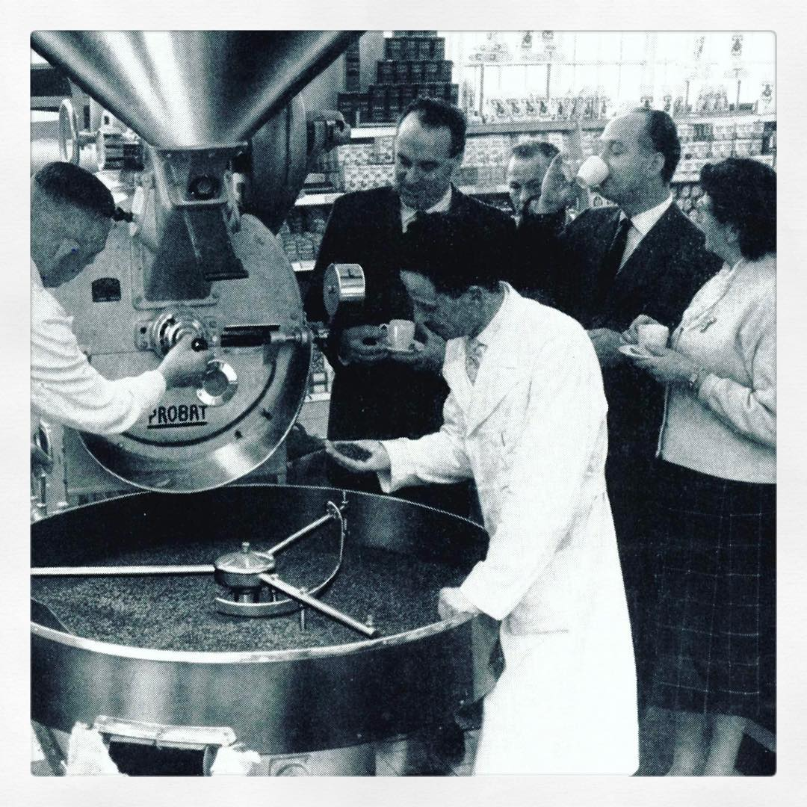
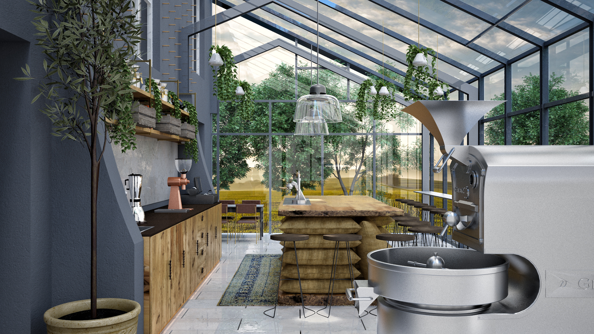

The Caffeinated
COFFEE ROASTERS
About Us
John always been involved in the industry, working closely for his father’s coffee business growing up. But it wasn’t until he experienced Australia’s progressive coffee culture first-hand during a trip in the early 1950’s, that the idea for The Caffeinated was born.
Now, with a team full of coffee professionals, a world-class coffee program, 6 coffee shops and an ever-evolving product range, The Caffeinated sits proudly as one of the longest standing speciality coffee roasters on UK shores.
An ardent collective of farmers, pickers, sorters, drivers, rakers, washers, dry millers, cuppers, roasters, trainers, baristas and drinkers. Evolving over many years, countless miles and infinite beans. Each has a different relationship with coffee, but the same goal: to make yours exceptional.
Through our direct trade practice we're able to support our farm and mill partners directly, giving our drinkers full traceability of the coffee in their cup. Wherever possible we visit the farmers or mill representatives each year - in El Salvador, Nicaragua, Colombia, Brazil - we ask questions and we listen.
To the farmers, to the workers, and to their families. Our partners are committed to environmentally and socially sustainable practices. Our coffee program is one of the cornerstones of our B Corp certification.
The stories behind each cup stretch across continents and through generations of expertise. It's our responsibility to share those stories with the drinker.

The New Us
Recognising knowledge and skill. Rewarding consideration and creativity. We're privileged to have worked with and supported some of the world's leading coffee professionals.
Modern coffee roasting is informed by better understanding of coffee chemistry and what changes happen during the process. Coffee professionals are better equipped to measure variables and analyse why a roast is successful or not.
With technologies such as digital temperature reading and profiling software they can be more efficient and consistent than ever before.
There are several ways you can approach experimentally processed coffees when profiling them.
Anne Cooper is a consultant at Equilibrium Master Roasters in Melbourne, Australia. She says that she profiles in a completely different way, which helps her manage and observe how experimental beans behave during the roast.
“I believe many use process & density as a way to start a roast, which I don’t do,” she says. “My profile also has specific RoR targets at certain milestones along the way. So, if I get different feedback from a certain bean, then I can adjust and stay on track, and keep the energy in check to give the coffee every opportunity to shine.
“I use a baseline profile first, learn what the new bean needs to stay on track to that profile, and then create the specific heat management protocol for that particular bean.”
By using this method, Anne says she can learn more about how each individual lot is processed, and adapt accordingly. This informs her roast management and heat strategy.
Anne also notes that first crack is different in terms of “timing and intensity” with experimental lots. She says that this “really challenges your senses and how to finish development at the end of the roast”.
Yiannis says that TAF’s approach to roasting experimentally processed coffees has also been helped by working with a different style of heat application.
“What works for me is radiation, rather than conduction or convection,” he says. “I think it allows much better control for the bean when absorbing heat; I find it very helpful with these beans, especially for those that have fermented for a long time, such as carbonic maceration or static cherry fermentation.”
